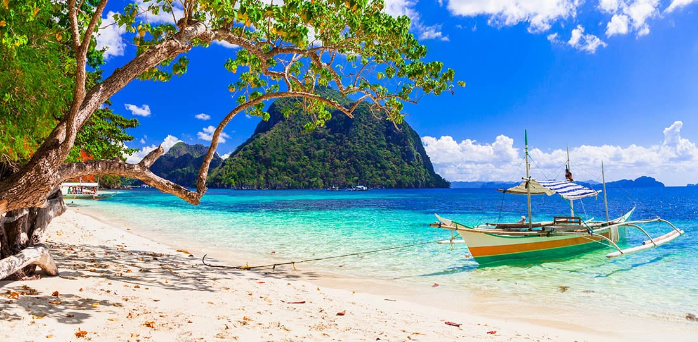

Palawan is a breathtaking province located in the western part of the Philippines. Renowned for its stunning natural beauty, Palawan is often considered one of the world's most captivating destinations. The province is an archipelago comprising numerous islands, with the main ones being Palawan Island, Busuanga, and Coron.
Palawan is celebrated for its pristine white-sand beaches, crystal-clear turquoise waters, and lush, untouched landscapes. One of its most famous attractions is the Puerto Princesa Subterranean River National Park, a UNESCO World Heritage Site and one of the New Seven Wonders of Nature. This underground river flows through a captivating cave system, surrounded by unique rock formations.
The province is also home to the enchanting Bacuit Archipelago, which includes the renowned El Nido. El Nido is celebrated for its towering limestone cliffs, hidden lagoons, and diverse marine life, making it a paradise for snorkelers and divers.
Beyond its coastal wonders, Palawan boasts rich biodiversity and is recognized for its commitment to environmental conservation. The Calauit Safari Park showcases a unique blend of African and Philippine wildlife, providing a distinctive safari experience.
Palawan's charm extends to its local communities, where warm hospitality and a vibrant cultural heritage welcome visitors. The combination of natural wonders, ecological consciousness, and cultural richness makes Palawan an unparalleled destination for those seeking an idyllic tropical retreat.